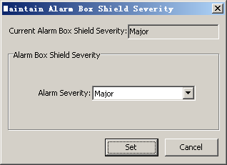

This describes how to query and set the shield severity of the alarm box. Only the alarms that are set to be Report and whose shield severity is equal to or greater than the Current Alarm Box Shield Severity will be reported to the alarm box.
Prerequisites
- The LMT runs normally.
- The communication between the LMT and the BSC is normal.
Procedure
- Through GUI
- Choose . A dialog box is displayed, as shown in Figure 1.
Figure 1 Maintain Alarm Box Shield Severity dialog box
- Set the alarm severity of the alarm box in the Alarm Box Shield Severity area.
- Click Set. Setting the shield severity of the alarm box is complete.
- Through MML
- You can run the following commands on the Local Maintenance Terminal to maintain the shield severity of the alarm box.
- Run the LST ALMSCRN command to query the shield severity of the alarm box.
- Run the SET ALMSCRN command to set the shield severity of the alarm box.
Copyright © Huawei Technologies Co., Ltd.